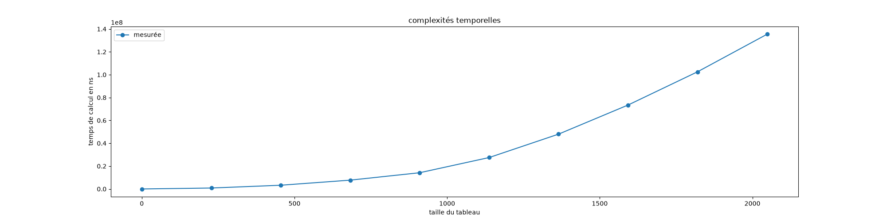
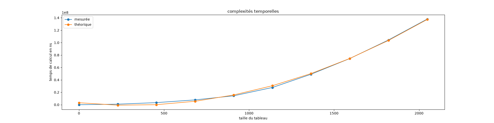
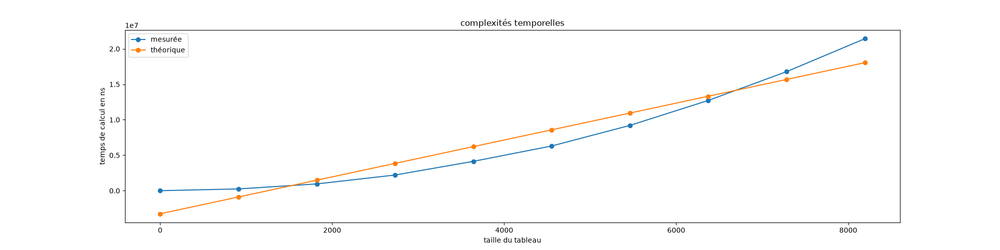

Projet : mesurer des complexités
Prérequis : fichiers du cours
Commençons par faire en sorte d'avoir le code du cours sur les mesures de complexités qui fonctionne.
Projet python
On présuppose que vous avec fait les prérequis du cours d'algorithmie, en particulier que vous savez coder en python et/ou que vous avez suivi le cours d'introduction à python, en particulier les parties 1 et 2.
Il vous faudra aussi installer deux modules pour votre interpréteur python :
[En utilisant le cours](/cours/coder-et-développer/apprendre-programmation/coder-projets/outils/ modules-externes-python/), installez le module matplotlib pour votre interpréteur (ceci devrait aussi installer numpy).
Code du cours
- téléchargez les fichiers du cours,
- créez un projet vscode dans ce dossier,
- exécutez le fichier
main.pyen faisant en sorte que tout fonctionne, - exécutez les tests unitaires (vous aurez bien au préalable installé le module https://docs.pytest.org/en/stable/) et vérifiez qu'ils passent.
Nous allons vérifier expérimentalement que les calculs de $\mathcal{O}$ faites dans le cours sont corrects.
Complexité de deux boucles indépendantes
Vérifiez que complexité de deux boucles indépendantes est bien de l'ordre du produit des longueurs de chaque boucle.
En reprenant et en modifiant le code du cours, représentez sur un graphique le temps mis pour calculer $\sum\limits_{1\leq i \leq n}(\sum\limits_{1\leq j \leq n} (i+j))$.
Vous prendrez comme paramètres :
T_max = 10**8 # 0.1s,K = 10.
Vous devriez obtenir une courbe qui ressemble à la fonction $y = x^2$ :

Pour en être sur, on va afficher également le polynôme de degré 2 le plus proche de nos mesures. On utilise pour cela une méthode nommée régression polynomiale et qui est très facile à faire avec numpy.
Si l'on suppose que l'on a deux tableaux $X$ et $Y$ de même taille et que l'on cherche les coefficients d'un polynôme $P$ de degré $n$ tel que $P(X[i])$ soit le plu proche possible de $Y[i]$, on peut utiliser np.polyfit :
import numpy as np
coefs = np.polyfit(X, Y, n)Qui nous permet facilement de calculer le tableau $Y2$ tel que $Y2[i] = P(X[i])$ avec la fonction np.polyval :
Y2 = np.polyval(coefs, X)Tracez un graphique superposant la complexité mesurée et sa complexité théorique (la regression polynomiale avec un polynôme de degré 2).
Vous devriez obtenir une courbe qui ressemble ça :

Complexité de deux boucles monotone
Vérifiez que complexité de deux boucles dépendante mais monotone est bien de l'ordre du produit des longueurs de chaque boucle.
En reprenant et en modifiant le code du cours, représentez sur un graphique le temps mis pour calculer $\sum\limits_{1\leq i \leq n}(\sum\limits_{i < j \leq n} (i+j))$ ainsi que sa courbe théorique en $\mathcal{O}(n^2)$.
Vous prendrez comme paramètres :
T_max = 10**8 # 0.1s,K = 10.
Complexité d'un algorithme récursif
En remarquant que :
Écrivez un algorithme récursif permettant de calculer $\sum\limits_{1\leq i \leq n}(\sum\limits_{1\leq j \leq n} (i+j))$
Le nombre de récursions que permet python par défaut est très faible (1000 par défaut) :
import sys
print(sys.getrecursionlimit())Afin de mesurer la complexité on aura besoin de bien plus de profondeur. On peut l'augmenter avec les commandes suivantes :
import sys
sys.setrecursionlimit(20010)En fixant le no,bre maximum de récursion à 20010 et N_max = 20000,
vérifier expérimentalement que la complexité de votre algorithme récursif est $\mathcal{O}(n)$.
Factoriel et nombres gigantesques
Mesurons le temps mis pour exécuter notre algorithme récursif calculant la factorielle :
Mesurez la complexité de l'algorithme récursif et comparez là à sa complexité théorique de $\mathcal{O}(n)$.
Pour ceci :
- augmentez la récursion à 20000,
- mettez un
T_max = 10**7
Vous devriez obtenir une courbe qui ne fonctionne pas du tout :

Ceci est du au fait que les nombres deviennent absurdement grand et que le calcul de la multiplication ne peut plus être considéré comme étant $\mathcal{O}(1)$.
L'algorithme de multiplication pour de grandes valeurs de $n$ prend de l'ordre du nombre de chiffres de $n$ à être exécuté, c'est à dire de l'ordre de $\mathcal{O}(\log(n))$ opérations. En déduire que la complexité de notre algorithme est de l'ordre de $\mathcal{O}(n^2\ln(n))$
corrigé
corrigé
Chaque récursion va effectuer une multiplication de complexité $\mathcal{O}(\log(k!))$ (avec $k$ son paramètre d'entrée). La complexité totale de l'algorithme est alors la somme de la complexité de toutes ces multiplications, c'est à dire $\mathcal{O}(\sum_{1\leq k \leq n}\log(k!))$.
Un petit calcul (à retenir, il revient souvent) donne alors :
Ce qui permet de conclure.
$\mathcal{O}(n^2\ln(n))$ est tres très proche de $\mathcal{O}(n^2)$ car le $\log(n)$ augmente très lentement par rapport à $n$.
Montrez expérimentalement que notre courbe est en $\mathcal{O}(n^2\ln(n))$.
Vous pourrez utiliser une régression avec un polynôme $P(X')$ de degré 1 en prenant $X' = X^2\ln(X)$.
Montrez que les courbes $y = x^2$ et $y=x^2\log(x)$ sont très proches.
Montrez que ceci est toujours valable pour un algorithme itératif calculant la factorielle.
En règle générale supposer que la multiplication est en $\mathcal{O}(1)$ ne pose pas de problème et es même vrai si nos entiers sont petits (ie. plus petit que $2^{64}$ ce qui est quand même assez grand, voir le problème de l'échiquier de Sissa) : nous n'avons pas vu ce phénomène avant de traiter des factorielles.
En règle générale la multiplication est bien en $\mathcal{O}(1)$, cela cesse d'être vrai lorsque les nombres manipulés deviennent absurdement grand, ce qui est très rare en pratique, en tout cas assez rare pour être ignoré en première approche.